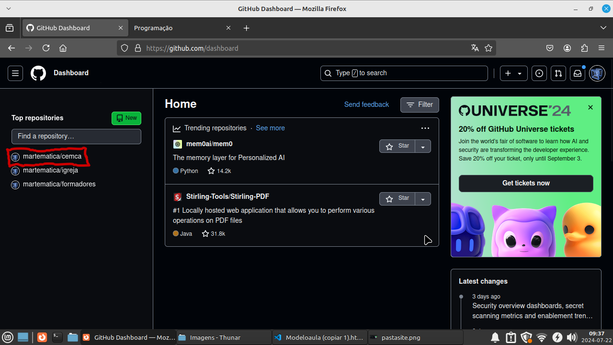
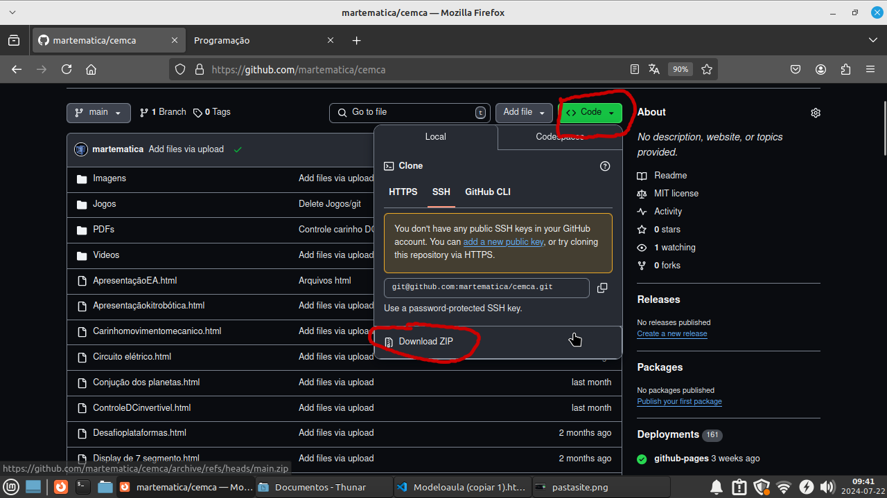
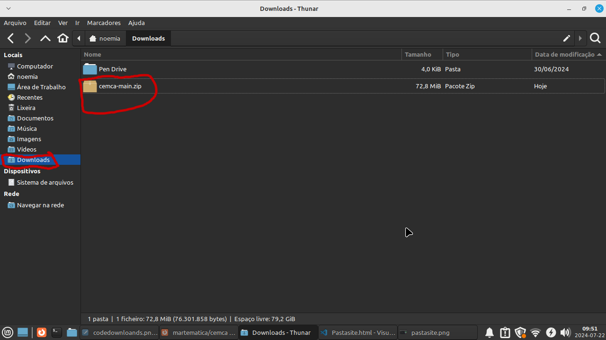
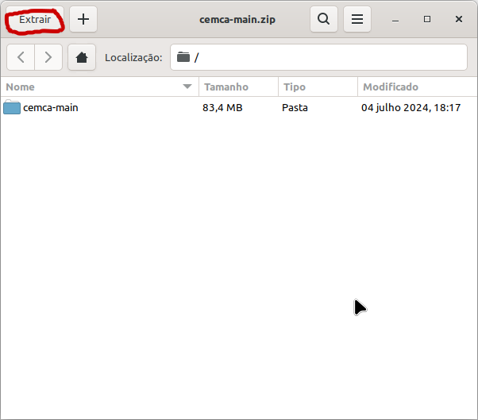
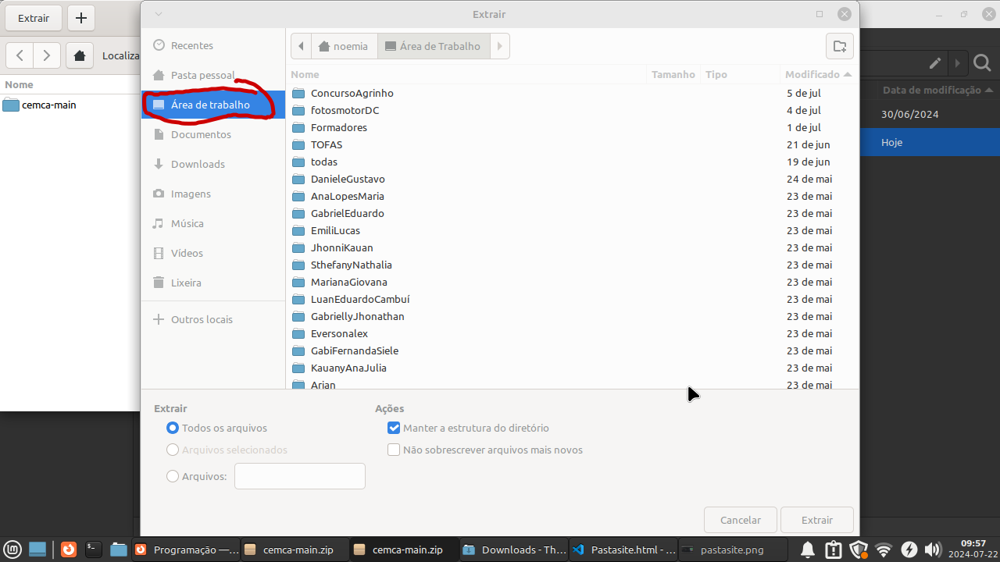

Primeiramente precisa entra na página do professor, em programas plataformas depois em github
faça seu login, entre na pasta que criou do seu site a esquerda da tela

depois cliclar em code e em seguida Downloads zip

com isso você irá baixar todos seus arquivos na pasta Downloads do computados, logo minimiza esta aba da internet
e vá na pasta downloads do seu computados e ache seu arquivo zip

dê dois clicks e abra a janela para extrair seus arquivos dando um click em extrair

escolha a área de trabalho para salvar seus arquivos e click em extrair no canto inferior direito pronto seus arquivos estão na área de trabalho
